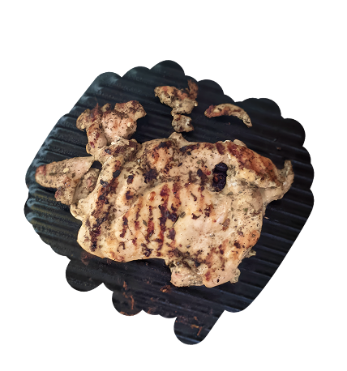

Daging ayam pilihan, saos rahasia, dan rasa yang tak terlupakan.


Kuliner modern yang menghadirkan kelezatan steak premium ke dalam pengalaman yang lebih kasual dan aksesibel. Kami berfokus pada kualitas bahan utama baik daging ayam pilihan maupun daging ayam yang juicy yang dipadukan dengan saus racikan khas yang kaya rasa.


Daging ayam panggang empuk dengan saus BBQ smoky, disajikan bersama kentang goreng dan sayuran segar.

Nasi hangat dengan potongan ayam empuk balutan saus teriyaki khas Jepang yang manis, gurih, dan ditaburi wijen.

Daging ayam panggang juicy dengan saus jamur yang creamy dan gurih, disajikan dengan kentang dan sayuran segar.